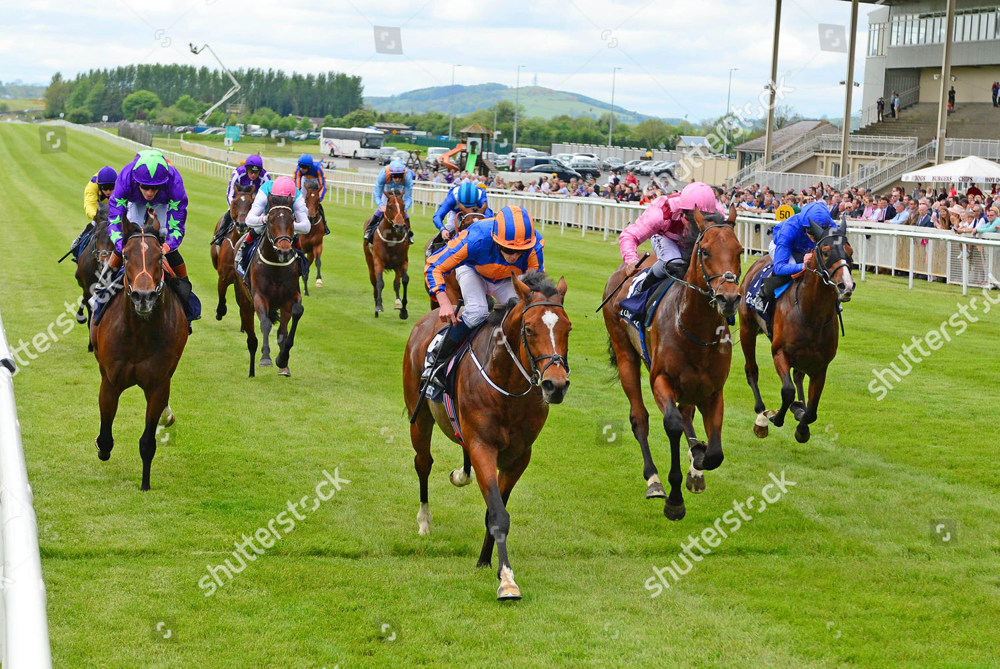

Gstaad conquista el Tattersalls Irish 2.000 Guineas en el Curragh
El potro Gstaad, entrenado por Aidan O'Brien y montado por Ryan Moore, se ha impuesto este sábado en el Tattersalls Irish 2.000 Guineas (Group 1) disputado en el Curragh. El favorito a 4-11 firmó un triunfo contundente de tres cuerpos para inscribir su nombre en el primero de los cinco Clásicos irlandeses de la…

El potro Gstaad, entrenado por Aidan O'Brien y montado por Ryan Moore, se ha impuesto este sábado en el Tattersalls Irish 2.000 Guineas (Group 1) disputado en el Curragh. El favorito a 4-11 firmó un triunfo contundente de tres cuerpos para inscribir su nombre en el primero de los cinco Clásicos irlandeses de la temporada.
El hijo de Starspangledbanner había sido segundo en su primer asalto a un Clásico esta misma temporada en Newmarket, en las 2.000 Guineas inglesas. La victoria del Curragh confirma su mejora con la subida de distancia y le coloca como una de las referencias europeas del kilómetro y media milla para el resto de la campaña. Antes de su salto a la edad de tres años ya había acumulado victorias destacadas en Royal Ascot y en la Breeders' Cup como dos años.
Tras él entraron Distant Storm y Pacific Avenue, los dos representantes de Charlie Appleby, completando un podio dominado por los grandes propietarios europeos del momento. El fin de semana en el Curragh se cierra este domingo con el Tattersalls Irish 1.000 Guineas para potrancas y el Tattersalls Gold Cup, dos Group 1 que continuarán perfilando los grandes objetivos de la temporada.
— Redacción de Galope al Día